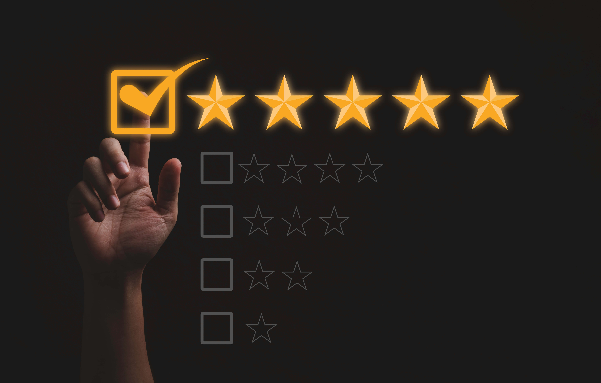

當品牌聲譽良好，就能激發客戶的信任和忠誠度，建立業界權威，並成為收入和成長的重要推動力。
然而，負面聲譽可能會損害銷售和客戶保留率。作為專業的網路聲譽管理公司，我們致力於幫助你維護和提升你在網路上的聲譽。

網上聲譽管理是網上宣傳的重要策略之一，它可以幫助建立正面形象，淡化負面評價，
並移除不利信息。透過專業的SEO和數碼營銷策略，有效提升品牌價值，
吸引潛在客戶，並增加業務機會。
塑造積極的品牌形象，提升公眾認知
策略性處理不利評論，減少負面影響
專業手段清除對品牌有害的內容
透過專業SEO策略增強品牌競爭力
良好聲譽帶來更多商業機會
在現今社會中，大多數人在作出購買決策之前都會進行網上搜索，閱讀評論、評價和其他人的意見及輿論，以確定一個品牌或產品是否值得信賴。如果你的網路聲譽受到負面評價或不利信息的影響，這可能會嚴重損害你的品牌及企業形象，並導致潛在客戶的流失。
客戶在購買前會查閱網上評價
良好評論增強客戶信心
保護企業長期建立的品牌價值
減少因負評導致的潛在客戶流失
作為一家專業的數碼營銷管理公司，我們的網路聲譽管理團隊提供全面的解決方案，
以幫助你維護和改善你的聲譽。
透過WhatsApp或填寫網上表格聯絡我們，了解您的聲譽管理需求
全面評估您目前的網上聲譽狀況，識別問題和機會
根據審核結果，制定個性化的聲譽管理策略
專業團隊執行聲譽管理計劃，包括內容創建和SEO優化
定期報告和持續監控，確保聲譽持續改善
無論你是個人還是企業，我們的網路聲譽管理服務都可以幫助你建立積極的網路形象，吸引更多客戶並提升業務成功的機會。
作為一家數碼營銷管理公司，我們的網路聲譽管理團隊致力於幫助你維護和提升你在網路上的聲譽，運用專業的SEO和數碼營銷策略。
聲譽管理是一個持續的過程。初步成效通常在1-3個月內可見，但建立穩固的正面聲譽需要長期持續的努力。具體時間取決於現有聲譽狀況和問題嚴重程度。
視乎情況而定。如果評論違反平台政策或法律，我們可以協助申請移除。對於合法的負面評論，我們會透過建立正面內容和SEO策略來淡化其影響。
我們的服務包括：實時監控和評估、反饋和回應管理、關鍵字優化、正面內容建立、競爭對手監測，以及定期報告和策略調整。
是的，我們的網路聲譽管理服務適用於個人和企業。無論您是專業人士、公眾人物還是企業品牌，我們都可以提供度身訂造的聲譽管理方案。
只需聯繫我們進行免費諮詢。我們會先了解您的需求，進行初步聲譽審核，然後為您制定個性化的聲譽管理策略和報價。
讓 Unique Logic 的專業團隊為您管理和提升您的網路聲譽